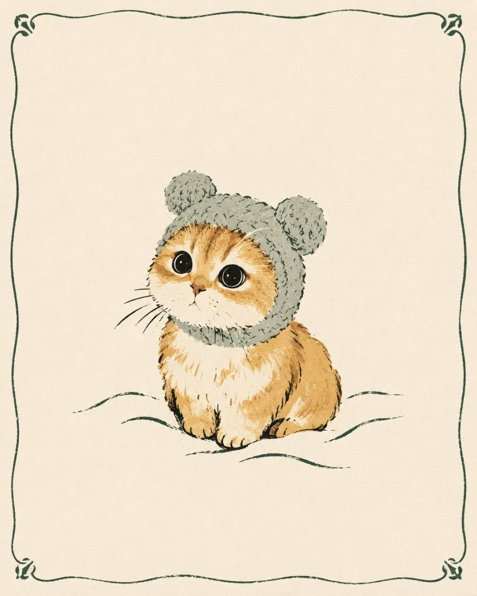

MDK
@mudak
MDK
@mudak
Появился промпт для ChatGPT который сделает милые новогодние открытки из ваших фотографий

Появился промпт для ChatGPT, который сделает милые новогодние открытки из ваших фотографий
Берём любую фотку, загружаем её в чат и вставляем команду. Далее остаётся распечатать и написать пожелания. Открытку печатаем на матовой бумаге с плотностью 200-300 г, а в запрос добавьте слова "зимняя сцена" или год.
Сохраняем и пробуем!
Берём любую фотку, загружаем её в чат и вставляем команду. Далее остаётся распечатать и написать пожелания. Открытку печатаем на матовой бумаге с плотностью 200-300 г, а в запрос добавьте слова "зимняя сцена" или год.
Промпт такой:
Преврати загруженное фото в стильную авторскую Pinterest-открытку в эстетике независимых французских stationery-брендов и contemporary hand-drawn illustration. Используй фото как вдохновение, а не для точного копирования. Выдели 1–3 узнаваемых элемента и создай лаконичную художественную композицию. Стиль: выразительные, свободные линии чёрной тушью, слегка небрежные контуры, упрощённые формы, плоские цветовые пятна, палитра из 4–5 гармоничных оттенков. Эстетика ручной шелкографии, винтажной журнальной графики и авторских дизайнерских открыток.
Расположи небольшую иллюстрацию на тёплом молочном фоне с большим количеством свободного пространства. Обязательно добавь по периметру тонкую, изящную, нарисованную от руки декоративную рамку с мягкими фигурными уголками и лёгкой асимметрией. Цвет рамки — приглушённый бордовый, терракотовый или тёмно-зелёный, гармонирующий с иллюстрацией. Рамка должна быть деликатной, как на винтажных французских открытках, не отвлекать внимание от рисунка. Итог — эстетичная коллекционная открытка из независимого дизайнерского магазина, с индивидуальным художественным почерком. Исключи фотореализм, детскую мультяшность, чрезмерную детализацию, карандашную штриховку, объёмные тени, градиенты, 3D и типичную цифровую иллюстрацию.
Сохраняем и пробуем!